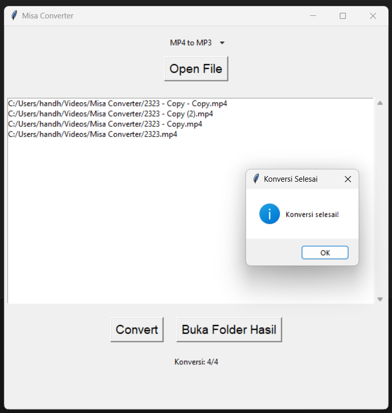

Misa Converter
Misa Converter adalah program media converter dengan kualitas seadanya menggunakan python.
Ayahku terlalu tua untuk menggunakan aplikasi converter diluaran yang ui dan alur penggunaanya yang kompleks. aku cukup frustasi mencari aplikasi converter yang cocok untuknya. Setelah mencoba beberapa aplikasi converter dan ia menolak, aku memutuskan membuat sendiri dengan tampilan dan alur penggunaan yang mudah. Ayahku menyukainya.
Format yang di support
- mp4 ke mp3
üìù [Catatan]: Untuk sekarang hanya support mp4 ke mp3, jika ayahku meminta format lain, aku akan mempertimbangkan menambahkan format lain
Instalasi
Menjalankan Langsung Misa_Converter.py
Menginstall Dependencies:
bash pip install -r requirements.txtMenjalankan Program:
bash python Misa_Converter.py
Membuat Executable untuk Windows
Menginstall Dependencies:
bash pip install -r requirements.txtMenginstall cx_Freeze:
bash pip install cx_FreezeMembuat Executable:
bash python setup.py buildMenjalankan Program: Jalankan file Misa_Converter.exe yang ada di folder
..\build\exe.win-amd64-3.11
üìù Catatan: Misa Converter hanya diuji pada Windows 10 dan 11. Kemungkinan tidak kompatibel dengan sistem operasi lainnya.
Penggunaan
 1. Jalankan program 2. Klik tombol “Open File” untuk memilih file video mp4 yang ingin Anda konversi ke mp3. 3. Setelah memilih file video, klik tombol “Convert” untuk memulai konversi. 4. Setelah konversi selesai, Anda dapat membuka folder tempat hasil konversi disimpan dengan mengklik tombol “Buka Folder Hasil”.
üìù [Catatan]: Folder untuk hasil output yang sudah terkonversi harusnya berada pada folder Videos pada os Windows C:\Users\NameOfUser\Videos\Misa Converter.
Lisensi
Program ini dilisensikan di bawah MIT License.